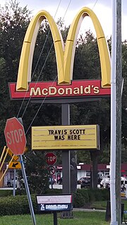

Festival AstroWorld
Após o lançamento do Astroworld, Scott anunciou o Astroworld Festival, um concerto festivo anual que aconteceria do outro lado da rua do antigo local do parque Six Flags AstroWorld. O Festival de Astroworld de 2018 contou com aparições de Post Malone, Lil Wayne, Young Thug, Rae Sremmurd, Gunna, Houston All Stars, Sheck Wes, Metro Boomin, Trippie Redd, Smokepurpp, Virgil Abloh, e Tommy Genesis.
O festival de 2019 contou com as participações de Gucci Mane, Migos, Rosalía, Megan Thee Stallion, Playboi Carti, Pop Smoke, Young Thug, Young Dolph, Key Glock, Pharrell Williams, Sheck Wes, Marilyn Manson, DaBaby, Don Toliver e Houston All Stars.
O festival de 2020 foi cancelado devido à pandemia de COVID-19 em curso.
Em 5 de novembro, a primeira noite do Festival Astroworld de 2021, ocorreu uma queda fatal de multidão. Dez pessoas morreram por asfixia compressiva, 25 pessoas foram hospitalizadas e mais de 300 pessoas foram tratadas por ferimentos.
McDonald's

Uma placa do McDonald's dizendo "Travis Scott esteve aqui" e "Cactus Jack esteve aqui" em São Petersburgo, Flórida.
Em setembro de 2020, Scott colaborou com o McDonald's para lançar uma refeição de edição limitada que foi introduzida nos restaurantes McDonald's participantes na América do Norte. A parceria marcou a primeira refeição do McDonald's endossada por celebridades desde que o McDonald's colaborou com Michael Jordan para lançar um hambúrguer "McJordan" em 1992. Devido à alta demanda, algumas filiais do McDonald's ficaram sem ingredientes vinculados ao promoção, causando uma ruptura na cadeia de abastecimento. Scott e McDonald's também lançaram uma linha de mercadorias da marca McDonald's e Cactus Jack que inclui uma série de itens de roupas, um tapete e um travesseiro corporal em forma de McNugget. O site de merchandising também incluiu uma pré-venda de um próximo single intitulado "Franchise", a ser lançado "em breve".
Cactus Jack Records
Cactus Jack Records é uma gravadora americana fundada em 2017 pelo rapper americano Travis Scott. Seus primeiros contratados foram o produtor musical Chase B, Sheck Wes, Don Toliver e Luxury Tax. A gravadora lançou sua mixtape de estreia Huncho Jack, Jack Huncho em 2017, seguida do terceiro álbum de estúdio de Scott, Astroworld, em 2018, e do álbum de estreia de Don Toliver, Heaven or Hell em 2020.
PlayStation
Em outubro de 2020, Scott anunciou que estava se juntando à equipe do PlayStation como um Parceiro Criativo Estratégico para promover o console PlayStation 5.[78] Juntos, eles lançaram mercadorias especiais, que incluem uma versão inédita de Nike Dunk Lows. Eles também enviaram um vídeo especial de unboxing do console PlayStation 5 para o YouTube.[79] O vídeo apresenta imagens de Scott tocando no console ao lado dos fãs, uma performance de piano de James Blake e um tributo a Pop Smoke.
|